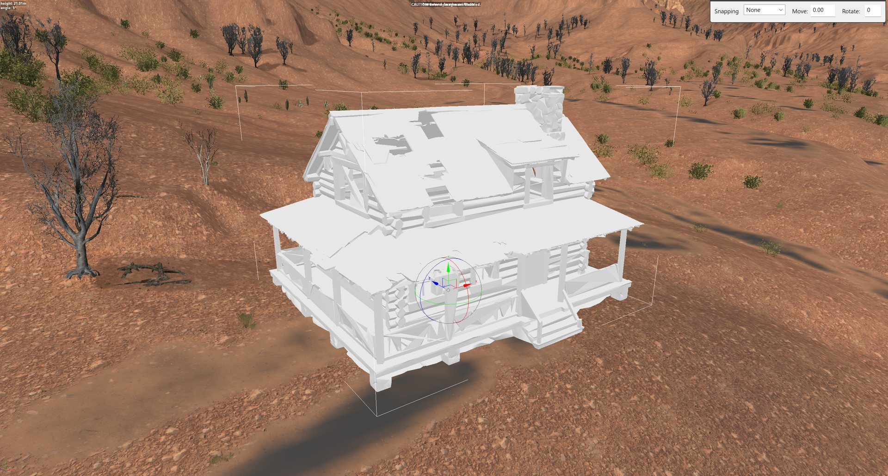
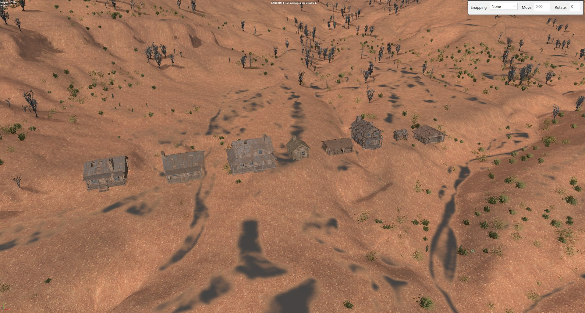
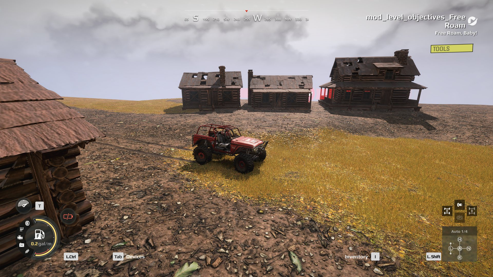

The game’s own models only go so far. This page covers getting a model of your own onto a map: where it can come from, how to turn it into something the editor will place, and the one step after every pack that makes the map load.
The rules the editor enforces on a custom model, and why a packed map with one on it needs fixing, are on Models, rocks and cliffs. This page is the practical route through them.
How much of this is tested
The whole route, from a picture to a model loaded in a running game, has been done for a set of custom buildings made with Meshy and imported with these tools. The import and the after-pack fix are the same for a model from any source. Maps installed from mod.io have not been tested.
Before you start: what you set up yourself#
Some routes need outside services you sign up for and pay for yourself
The tools are free and open source. Some of what they drive is not, and none of it comes with the tools: they do not install it, cannot set it up for you, and have no connection to the companies that run it.
| You need | For | Cost |
|---|---|---|
| Expeditions, with the editor run once | Everything. The tools use the game’s own converter | You own it |
| Python 3.10 or newer | Everything | Free |
| Blender | Converting every model, whatever its source | Free |
| Meshy, a 3D model generator run as a web service | Only for making a model from a picture | Paid, billed by Meshy in credits. As these tools build a model it costs 35 credits: 30 to generate, 5 to remesh. Some plans include free retries; check whether yours covers runs made through the API |
| Tripo, another 3D model generator run as a web service | The same job as Meshy, instead of it | Paid, billed in credits from a Tripo Studio plan. As these tools set it up, a model cost 45 credits in October 2026, and every result has a free retry |
| An image generator you choose | Only for making the picture you give the 3D generator | Depends on the tool |
Before you spend anything:
- Your pictures leave your computer when you use Meshy, Tripo or an online image generator. Their terms decide who owns the result, not the tools’ licence. Read them before you sell or publish what you make.
- Credits go the moment a command runs. A bad result is billed like a good one.
- A service can change. If Meshy or Tripo changes its site, API or prices, that step can stop working until the tools are updated.
Three places a model can come from#
| Route | Good for | Needs |
|---|---|---|
| Download one | Rocks, plants, common props | A model library that allows reuse. Use CC0 or CC BY only |
| Build it in Blender | Anything made of simple parts: timber, steel, walls, kits that fit together | Blender and time, or a script that builds it |
| Generate it from a picture | One-off buildings and set pieces you cannot find anywhere | An image generator and a paid Meshy or Tripo account |
Whichever route you take, the end of it is a .glb file, and from there the import is
the same.
Generating a model from a picture#
A 3D generator (Meshy and Tripo both work with these tools) builds a textured model from one picture. What it can reproduce depends far more on the picture than on anything you do afterwards.
Start from a photograph of a real one. For anything that exists in the real world (a mine headframe, an ore bin, a water tank), find photographs of a surviving example first, and make the concept picture from them. A concept drawn from someone’s idea of how a structure works comes out as something no one would build; one made from a real photograph keeps the real engineering. Several photographs from different sides are better than one: a single view hid that one ore bin was as big as its headframe. Use photographs only as a reference unless their licence lets you publish them.
Make the picture for the generator, not for people.
- One object, on a transparent or plain background.
- Big solid masses. Wire, chain, cable, lattice and loose clutter come back as lumps or holes.
- Lettering only on flat, upright panels facing the camera square-on. Text on a tilted surface came back as mirrored nonsense; every square-on sign read.
- Nothing small in front of a sign. A small lamp on a sign was stretched into a wedge across the letters, and no setting removed it. Fix it in the picture.
With Meshy: generate, then remesh. Meshy’s full-detail model has far too many faces for the game, which takes at most 65,534 per mesh. Meshy’s remesh rebuilds it at 30,000 triangles and keeps the texture. Never reduce it in Blender instead: decimating a generated model scrambles its texture.
python meshy.py concept.png --name my_shed # 30 credits
python meshy.py --remesh <task id> --name my_shed_rm --polycount 30000 # 5 credits
python check_model_base.py <meshy store>\my_shed_rm.glb
meshy.py and check_model_base.py are in the toolkit’s fob-modules folder.
check_model_base.py catches a fault Meshy often leaves: the floor stored twice, facing
up and down, which shows as dark flickering triangles on the ground under the model.
With Tripo: set the polycount before you generate. Tripo Studio’s default is
2,000,000 triangles; set it to 40,000, the texture to 2K (the game’s limit), and turn
Remove Lighting on so no shadows are painted into the texture. Tripo keeps these
settings between runs. tripo_studio.py drives the Studio page in a Chrome you have
signed in to, refuses to generate if the price is higher than expected, and saves the
GLB. A bad result gets Tripo’s free retry, not a second paid run.
python generate_model.py concept.png --name my_shed --with tripo # or --with meshy
Tested so far: Tripo models made this way passed every import check and were placed in the editor. None has been seen in a running game yet.
The Meshy website and the API keep separate lists
A model you make on the Meshy website cannot be fetched through the API, and the
other way round. Its Retry button is on the website. If a result is bad and
the picture has not changed, retrying there may be free on your plan, where
running meshy.py again always starts a new, billed task.
Building a model in Blender#
A model you build yourself has none of a generated model’s surprises, and you choose where its origin is. That matters for pieces meant to fit together.
Kit pieces line up by their origins. Put the origin of each piece where it joins
the next one, then import with --keep-origin. Placed at the same point, two pieces
meet exactly. For example, a chute section has its origin at its joint, and the
trestle that holds it up has its origin at the top of its cap: place the trestle at
the chute’s joint and it carries the chute. Make the legs longer than they need to be
and let the extra sink into the ground; one trestle then fits any slope up to its
length. placed in the editor, not yet seen in game
Keep the part names in Blender different from the model’s name. A model whose own name appears inside its file is rejected, with an error that does not say why.
Importing a model#
One command checks the file, converts it, installs it into your Media folder, and runs the game’s own converter on it:
python import_model.py shed.glb --name my_shed --height 4
import_model.py is in the toolkit’s map-models folder. The options that matter:
| Option | Use it when |
|---|---|
--height 4 or --length 12 |
Always. Imported models arrive at any scale; give the real size in metres |
--two-sided |
You can see through walls from inside. Generated models are often single-sided |
--keep-origin |
Kit pieces that line up by their origins. Leave it off and the model is set on the ground |
--collider box |
The automatic collision shape fails or is too lumpy |
The name uses lowercase letters, digits and underscores, and must not clash with a model the game already has.
Then restart the editor. Search Select Asset for the bare name (my_shed, not
the \Media it lists with). A new model can show pure white until the editor has
converted it: click Rebuild terrain and it comes up textured. No second restart is needed.


After every Pack terrain#
A packed map with a custom model on it drops back to the main menu, because the game registers the model under one name and looks it up under another. Run this after every pack, with the game closed:
python after_pack.py --check see what it would change
python after_pack.py fix every map in your Mods folder
It renames your models inside the packed map to the name the game looks for, keeps a backup beside the pak, and warns if a model’s textures are not shipped with the map. If it says do not upload this map, a model will render untextured on every machine but yours. The details are in Custom models in a map.
Custom buildings made from pictures with Meshy, imported with these tools, in a running game.

Getting the tools#
The scripts are in the expeditions-tools
repository: map-models for the import and the after-pack fix, fob-modules for
generate_model.py, meshy.py, tripo_studio.py and the model checks. Keep the two folders side by side. Each folder’s
README lists what it needs.
What is not known yet#
- whether a map with custom models works after being installed from mod.io
- whether a custom model’s landmark shows on the navigation map
- kit pieces that line up by their origins have been placed in the editor, not yet seen in a running game